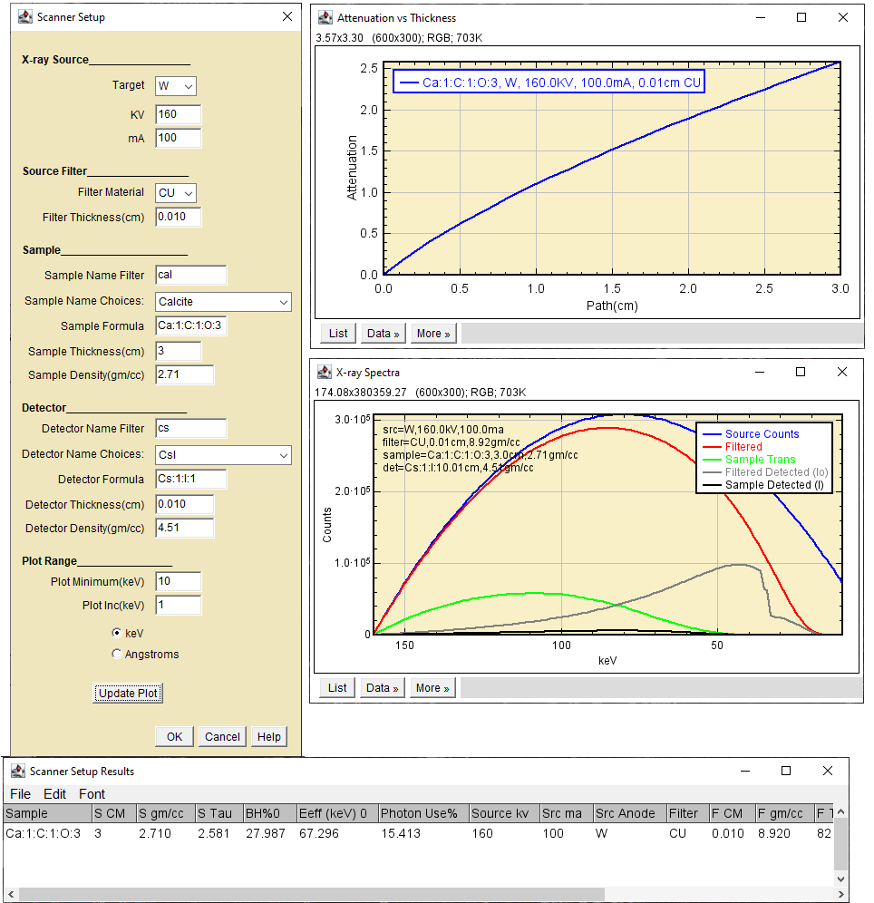
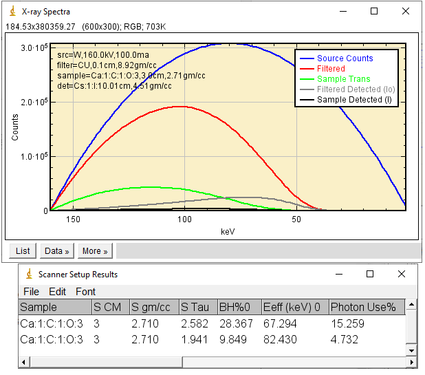
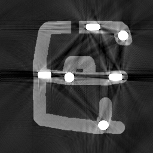
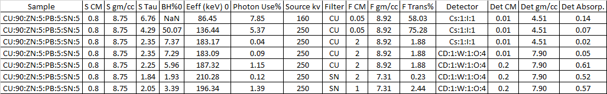
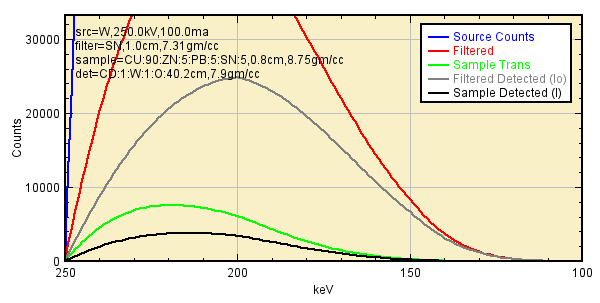
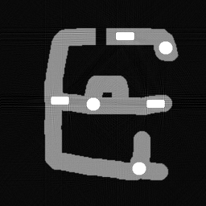

Scanner Setup is a tool to optimize the tradeoff between acquisition
speed and image quality by adjusting source KV, filter choice, specimen
size, and detector stopping power.
Example 1: Simulation of micro CT of carbonate core plug using a typical
laboratory scanner
Specimen is relatively homogeneous. Source Max KV 160, Detector CsI
screen 100μm thick

Intial Setup: 160 KV, 0.01cm Cu filter
The filter transmits a lot of photons below 50keV(red curve).
The detector response falls off rapidly above 50 keV(gray
curve).
The 3cm thick specimen transmits no x-rays below 50 keV (green
curve).
The preferential absorption of low energy photons by the thin
portion of the specimen causes significant beam hardening, 28%
The sample maximum absorbance (tau) is 2.6, optimal tau~2.
Some optically coupled detectors become non-linear above tau~2.
The effective energy Eff is 67.3keV
Adjustment: Increase filter thickness to 0.1cm to reduce beam
hardening.

Adjustment: 160 KV, 0.10cm Cu filter
The beam hardening is reduced to 9.85%
The filter transmits only a small number of photons below
50keV, decreasing photon use to 4.7%. Scan times will be 3x longer but
the data will be of better quality.
The sample tau is 1.94, optimal tau~2.
The effective energy is increased to 82.4keV
Exercises:
What is the effect of changing detector composition and
thickness?
What sort of source filter and detector would be optimal for
this 3cm sample or smaller, larger or more attenuating samples?
Are absorption edges important?
Simulate a CT scan using ImageJ and CT_Tools
Construct a 3cm diameter TagImage
Scan it using TagImage_To_Parallel_Brems_Sinogram at the
Setup conditions.
Reconstruct using CT_recon, evaluate the image quality. Are
beam hardening artifacts present? Are they correctable in CT_Recon?
Example 2: Simulation of an 3cm aluminum extrudate with internal iron and
brass pins
Specimen is heterogeneous and highly structured. The brass pins are
rectangular and about 0.4cm in the long direction. When scanned at conditions same as
example 1, the high opacity of the brass pins causes strong
beam-hardening streak artifacts.

Extrudate 160 KV, 0.10cm Cu filter
The noiseless simulation showed a peak opacity
τ
~8. The artifact on a real scanner would most likely been much more
severe.
The Table below shows a series of steps to reduce both τ and beam-hardening while increasing photon use.
Note the detector change from thin CsI to thick cadmium tungstate

Start(top row) to Finish(bottom row) Setup Changes for Improved Scan
The plot below shows the spectral distributions at the final
configuration. The detector's high-energy response is improved. Most of
the low energy photons have been removed by the filter.

Spectral Distributions for Improved Scan

Extrudate 250 KV, 1.0cm Sn filter, CadTungstate detector No post-scan beam hardening correction was applied.
1. My Excel
Beam Hardening Add-in uses the Solver to maximize Photon
Use% while constraining sample tau and beam hardening.